トップ / バナー・SNS広告デザイン
グラフィックデザイン / 自主制作
バナー・SNS広告デザイン
カフェと賃貸物件を題材に、伝える情報を変えた広告を各3案ずつ制作。AIを画像素材やデザイン案の作成に取り入れながら、コピー、写真、余白、視線の流れを比較しました。
- 制作物
- 2シリーズ・3案ずつ。横長バナーとInstagram向け4:5の全12点
- 本人
- 企画・訴求整理・構成の比較・デザインの採用判断・確認
- AI
- ChatGPTによる画像素材・デザイン案の制作支援。Canvaも制作に使用
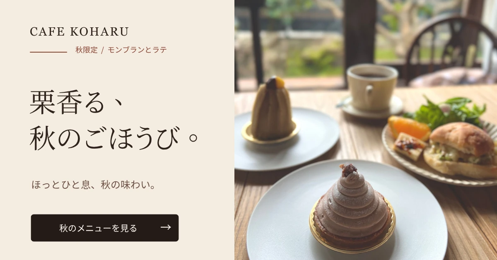
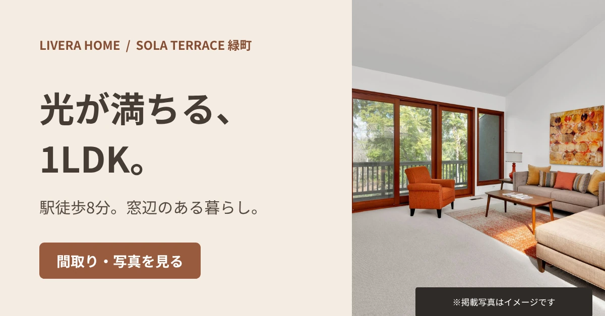
掲載作品は架空広告を想定した自主制作です。画像素材にはAI生成を使用しています。実在の店舗・物件の広告や配信成果を示すものではありません。
同じ題材でも、見せる情報を変える
カフェでは商品・空間・メニューの組み合わせ、不動産では室内・立地・暮らし方を切り口にしました。単に画像の色を変えるのではなく、最初に目に入る写真とコピーを変えることで、異なる訴求を作っています。
スマートフォンでの閲覧も想定し、横長の広告バナーとInstagramフィード向けの縦長画像を制作しました。
SERIES 01
秋限定カフェ｜CAFE KOHARU
秋限定のモンブランとラテを紹介する架空広告です。栗の色合いと木の温かみを活かし、商品そのもの、店内の空間、メニューの組み合わせの3方向で見せ方を変えました。
横長バナー（1200×628px）
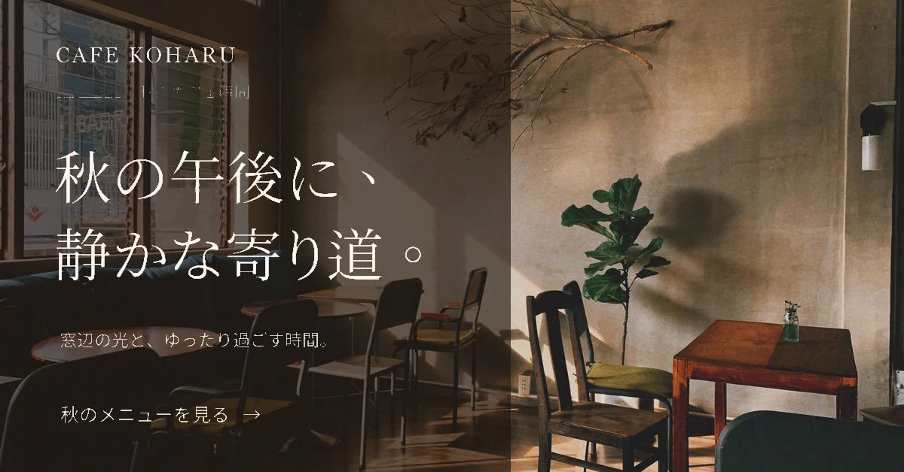
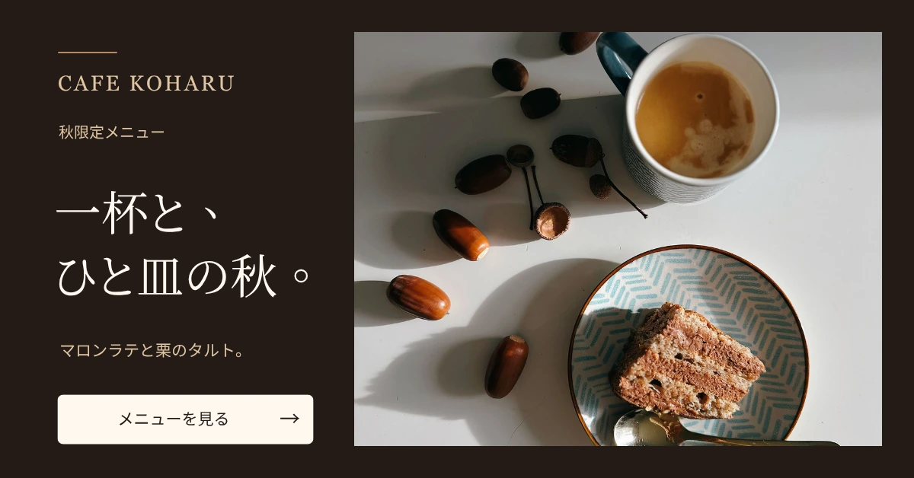
Instagram 4:5（1080×1350px）
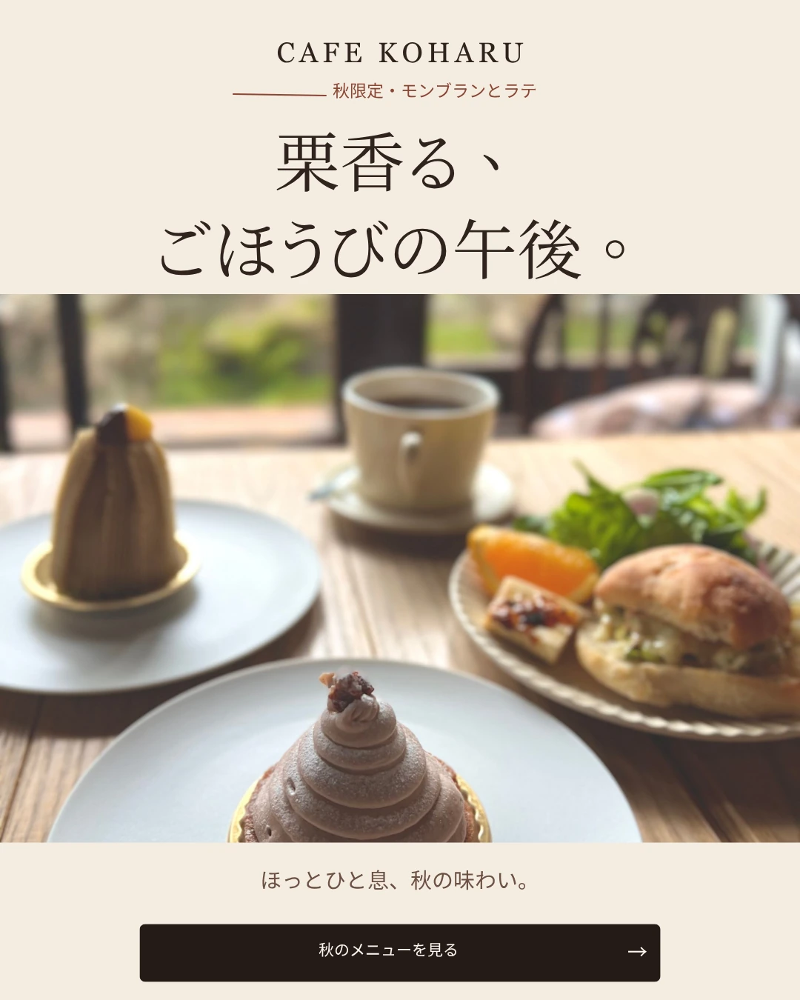
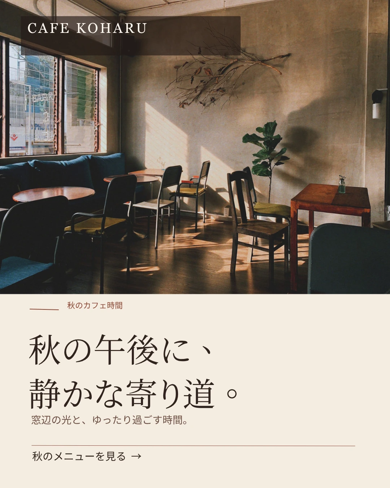
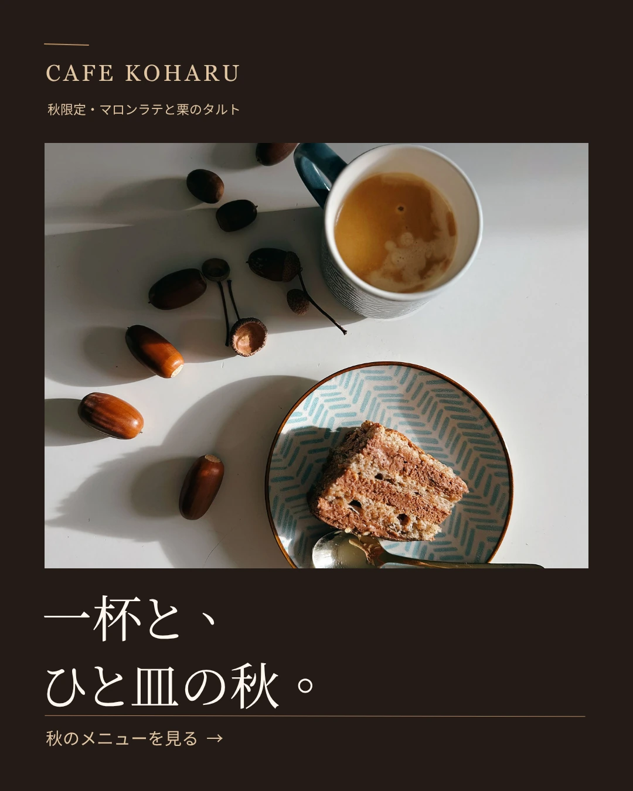
各画像を選ぶと、別タブで元のサイズを確認できます。
SERIES 02
賃貸物件プロモーション｜LIVERA HOME
明るい1LDKの賃貸物件を想定した架空広告です。同じ条件でも、室内の光、駅徒歩8分、窓辺の過ごし方のどれを最初に伝えるかで印象が変わるため、3つの訴求を比較しました。
横長バナー（1200×628px）
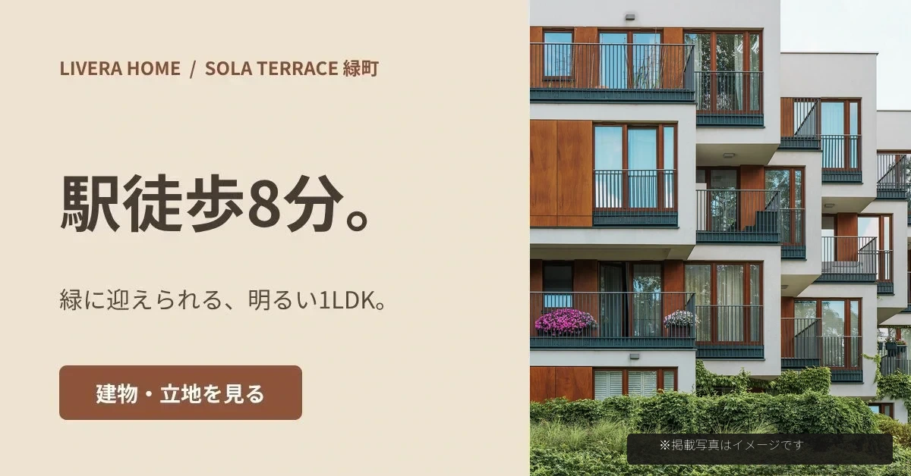
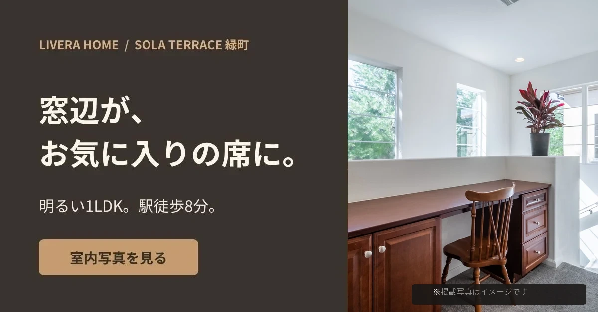
Instagram 4:5（1080×1350px）
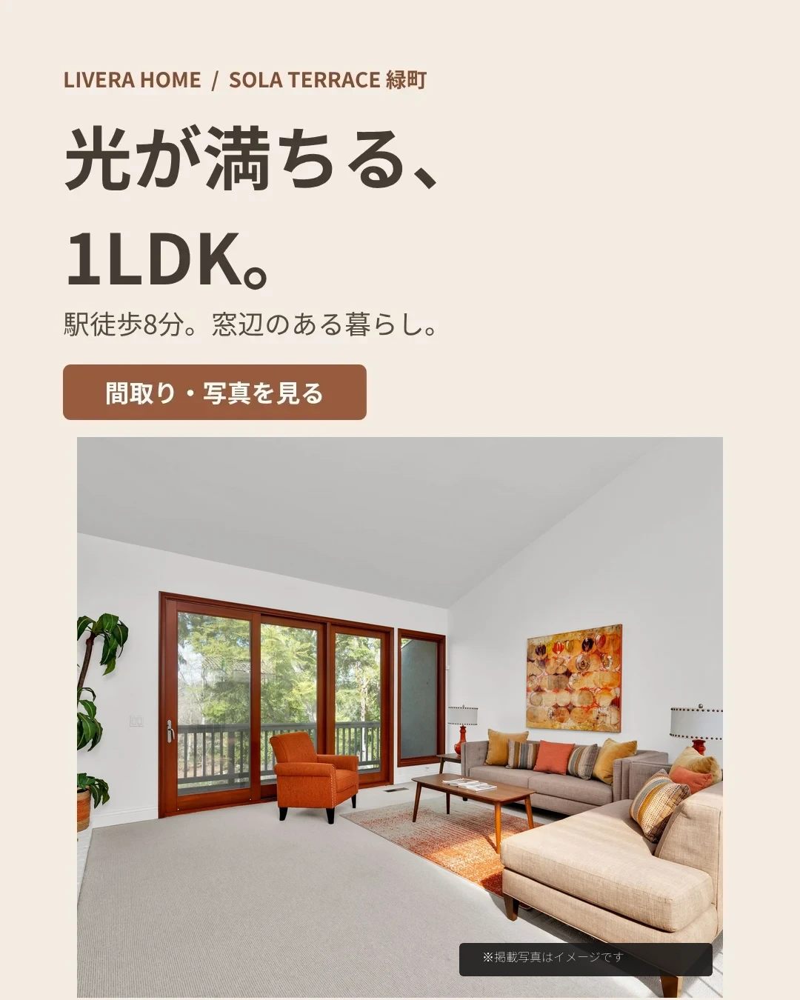
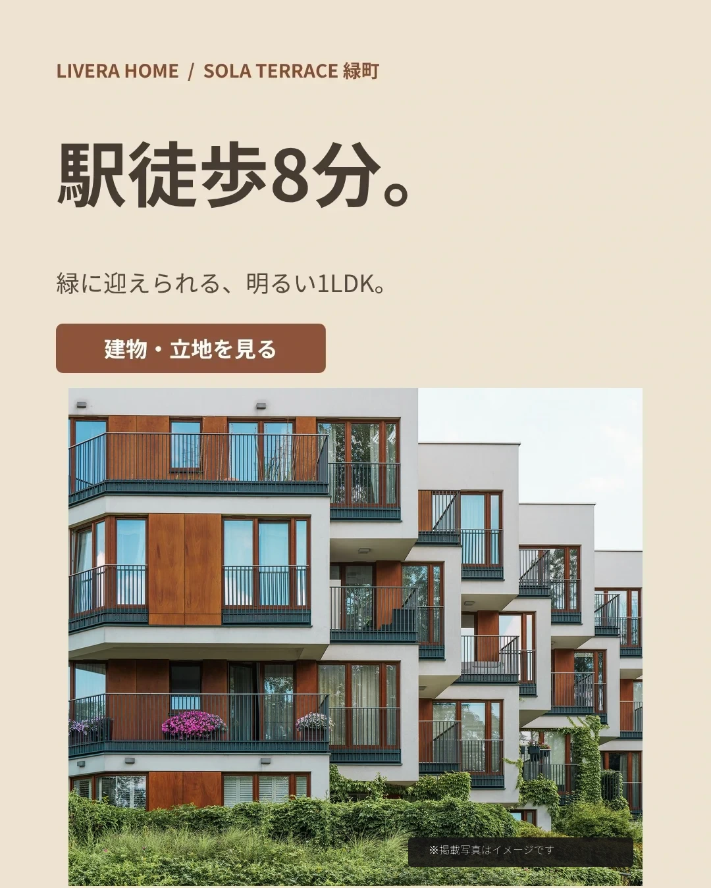
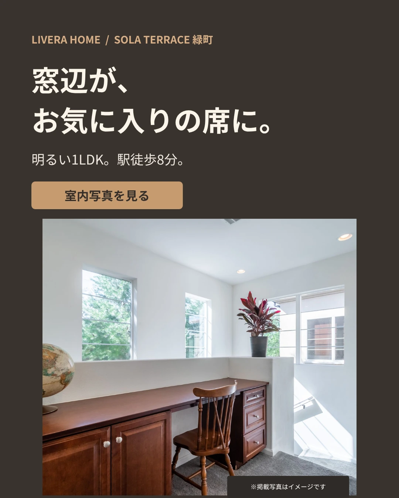
各画像を選ぶと、別タブで元のサイズを確認できます。
制作で考えたことと、AIの活用範囲
デザインで判断したこと
誰に何を見せるかを整理し、複数案のコピー、文字の強弱、写真の位置、余白を比較しました。横長・縦長では同じ内容でも読み順が変わるため、媒体に合わせて配置を検討しています。
AIで補助したこと
ChatGPTを画像素材やデザイン案の作成支援に使用し、Canvaも活用して制作しました。出力された案は完成品とせず、伝えたい内容に合うかを確認して選んでいます。